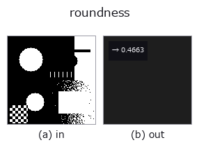

features op• データ種: region → feature
• 呼び出し: fullseye.apply(img, "roundness", a=0.5, b=0.5) (2-D は 1 画像 + 2 スカラつまみ a,b∈[0,1] のモデル)
• HALCON 相当: roundness(意味・パラメータは HALCON リファレンスが参考になる)

*図は合成の入力 128×128 で実際に走らせた出力。左が入力、右が出力。点群は上から見た散布(明るさ = z)、1-D 列は折れ線、体積は z 方向の最大値投影、動画は中央フレーム、複素画像は振幅、絵にならない返り値は値そのもの。*
*つまみ a は出力を変えない(実測: 0.1 / 0.5 / 0.9 で同一)。*
*つまみ b は出力を変えない(実測: 0.1 / 0.5 / 0.9 で同一)。*
段階(前置きの op → この op。左から順):
▸ roundness: stages (docs site)
真円度 `1 - σ/μ。μ と σ` は重心から輪郭画素までの距離の平均と
標準偏差で、距離が一様なほど(= 真円に近いほど)1 に近い。HALCON の
`roundness`（Shape factors from contour.）と同じ式。
★2026-09-26 まで `4・面積/(π・長軸長²)` という別の量を返していた
(16x64 の矩形で 0.239 対 0.577)。`circularity` が「面積が最大距離の円を
どれだけ埋めるか」を見るのに対し、こちらは縁の凸凹を見る。
`a, b` は未使用。
• サンプルデータ カタログ(DL URL / ライセンス) — 2-D は skimage.data(BSD/public)+ 合成、3-D は実データ源(Stanford/PDS 等)の DL URL。
• 演算子の来歴・参考文献 — この op 族の元になった研究/手法の出典。
• アルゴリズムの正典(著者・年)と用途は上記ファミリ使い方ガイドに記載。
下のプログラムは実際に走ることを確かめてある(図と同じ入力)。Studio のヘルプではこのブロックがボタンになり、その場で読み込んで実行できる。
threshold 0.50 0.50 roundness 0.50 0.50
▸ Load this pipeline · Load & run
• gallery2d_features — py -3.11 examples/gallery2d_features.py
• shape_factors_closed_form — py -3.11 examples/shape_factors_closed_form.py
feature を入力に取れる)features)effective_bit_depth · blob_count · area_frac · count_contours · total_length · vol_count · sk_euler · sk_entropy_feat
*Provenance: ops.py — 2D operator registry. この per-op ノートは tools/opdocs.py md が自動生成(手編集しない)。*
© 2026 Kazufumi Furuse — Fullseye operator documentation. Licensed under Apache-2.0.
{kind=link}